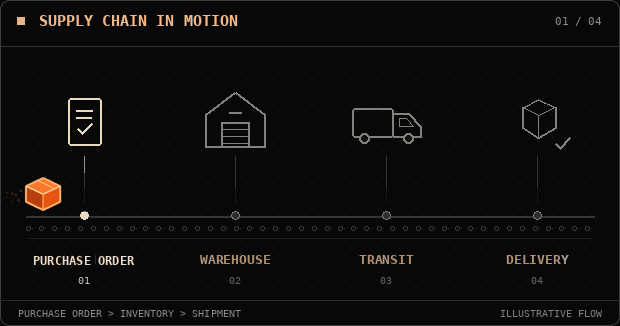

VLF / SOUNDTRACK / 07 PISTAS
En rotación.
Bandas sonoras, openings y rock mexicano. Abre una canción en Spotify y pulsa ▶.
- Gonna Fly Now · Abrir en Spotify ↗
- GO!!! · Abrir en Spotify ↗
- Blue Bird · Abrir en Spotify ↗
- Clubbed to Death (Kurayamino Variation) · Abrir en Spotify ↗
- Born Slippy (Nuxx) · Abrir en Spotify ↗
- Wish (Komm zu mir) · Abrir en Spotify ↗
- Los Malaventurados No Lloran · Abrir en Spotify ↗
SPOTIFY / REPRODUCCIÓN MANUAL
Elige una canción
Si el reproductor no suena, pulsa «Abrir en Spotify» junto a la canción.
